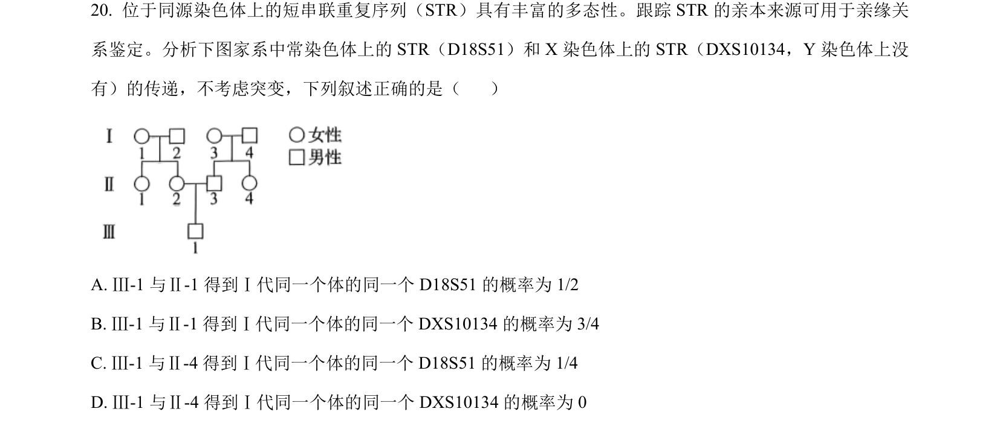
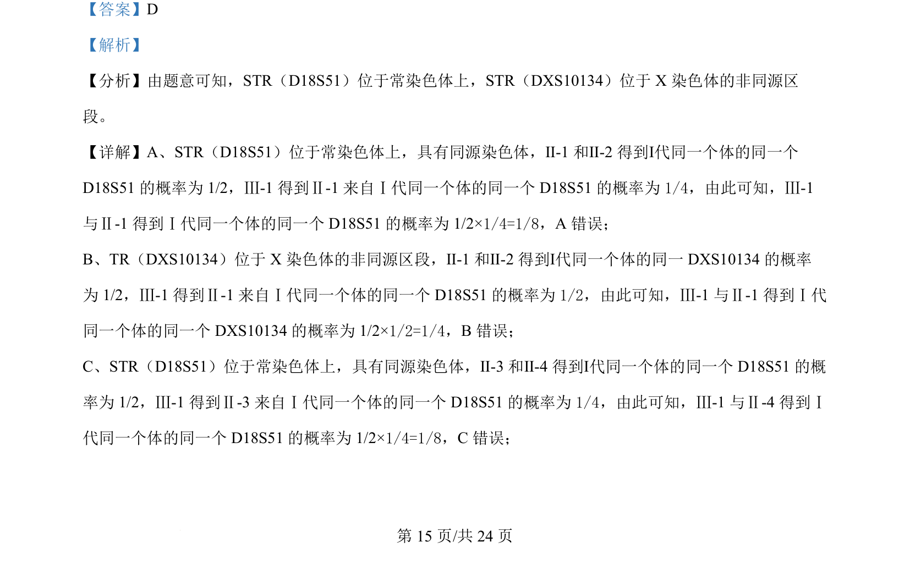
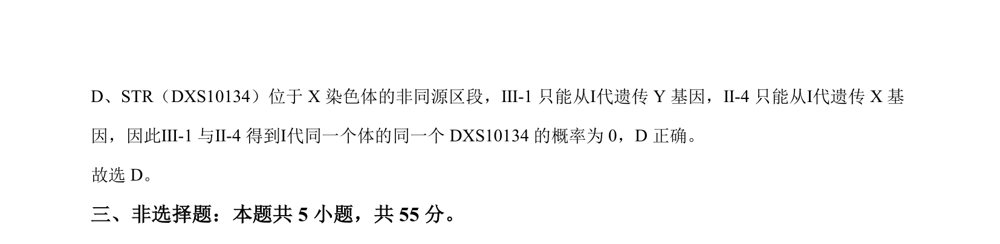

考点：短串联重复序列（STR） 常染色体遗传 X染色体连锁遗传 概率计算

用STR标记分析家系中常染色体和X染色体遗传概率。


📄 原 PDF 第 15 页：
素材/真题/吉林/2008-2024·（吉林）生物高考真题/2024年高考生物试卷（辽宁）（解析卷）.pdf
【答案】D 【解析】 【分析】由题意可知，STR（D18S51）位于常染色体上，STR（DXS10134）位于 X 染色体的非同源区 段。 【详解】A、STR（D18S51）位于常染色体上，具有同源染色体，Ⅱ-1 和Ⅱ-2 得到Ⅰ代同一个体的同一个 D18S51 的概率为 1/2，Ⅲ-1 得到Ⅱ-1 来自Ⅰ代同一个体的同一个 D18S51 的概率为1/4，由此可知，Ⅲ -1 与Ⅱ-1 得到Ⅰ代同一个体的同一个 D18S51 的概率为 1/2×1/4=1/8，A 错误； B、TR（DXS10134）位于 X 染色体的非同源区段，Ⅱ-1 和Ⅱ-2 得到Ⅰ代同一个体的同一 DXS10134 的概率 为 1/2，Ⅲ-1 得到Ⅱ-1 来自Ⅰ代同一个体的同一个 D18S51 的概率为1/2，由此可知，Ⅲ -1 与Ⅱ-1 得到Ⅰ代 同一个体的同一个 DXS10134 的概率为 1/2×1/2=1/4，B错误； C、STR（D18S51）位于常染色体上，具有同源染色体，Ⅱ-3 和Ⅱ-4 得到Ⅰ代同一个体的同一个 D18S51 的概 率为 1/2，Ⅲ-1 得到Ⅱ-3 来自Ⅰ代同一个体的同一个 D18S51 的概率为1/4，由此可知，Ⅲ -1 与Ⅱ-4 得到Ⅰ 代同一个体的同一个 D18S51 的概率为 1/2×1/4=1/8，C错误；